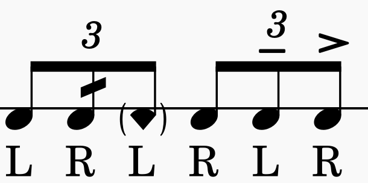

Sticking Basics
Stickings use the letters R (right hand) and L (left hand). Alternating patterns like RLRL and RRLL form the foundation of drumline technique. Many groups also use capital and lowercase letters to show volume differences — capital letters (R, L) represent full or accented strokes, while lowercase letters (r, l) are used for softer or ghosted notes. This helps players quickly read both the sticking and the intended volume.
Common patterns include:
- R L R L – alternating hands
- R R L L – double strokes
- R L R R | L R L L – single paradiddle
- R L R L R R – double paradiddle
- R L R R L L – paradiddle-diddle

Sticking